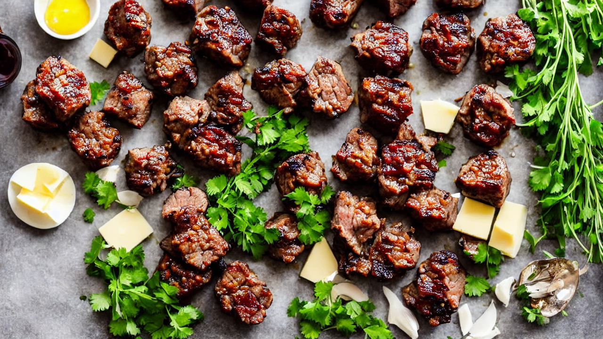
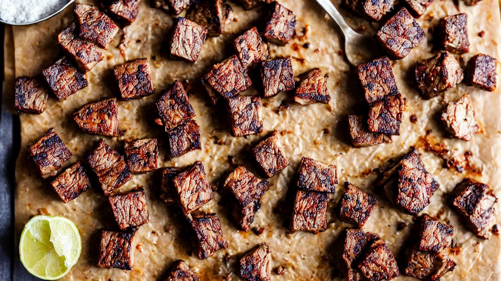
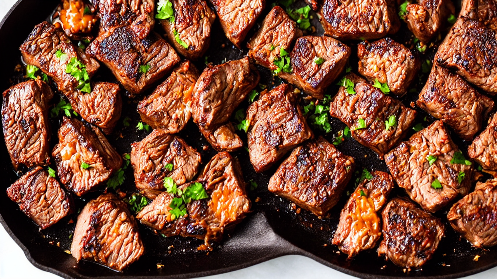
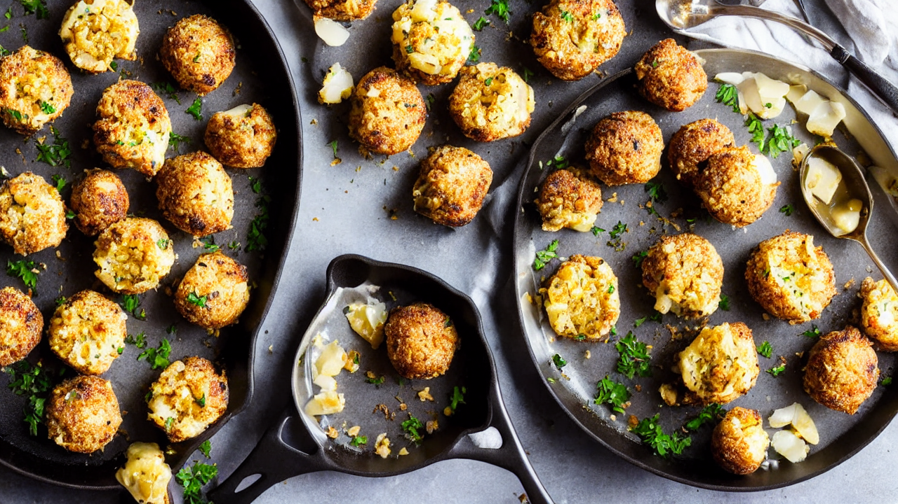
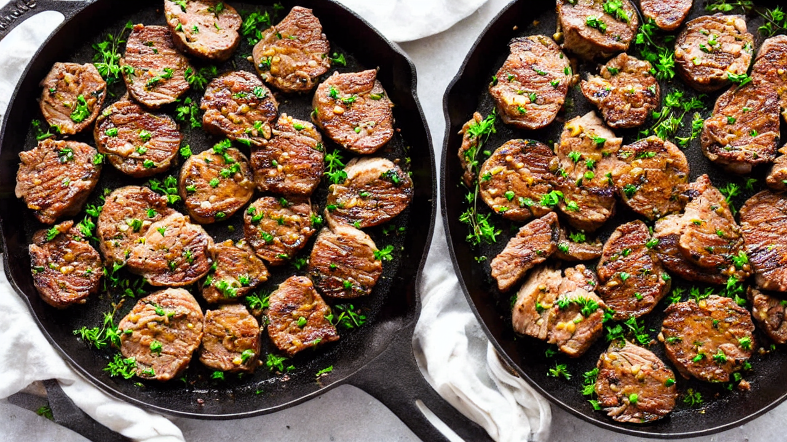
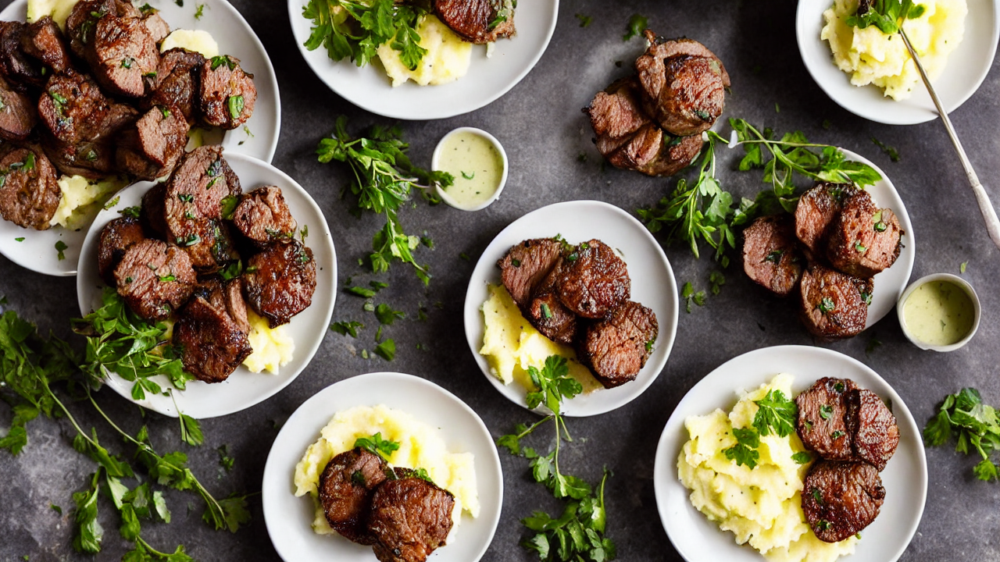

Garlic Butter Steak Bites | The FASTEST Way to Tender Steak!
Craving tender, juicy steak but short on time? These Garlic Butter Steak Bites are ready in under 20 minutes! This easy recipe uses simple ingredients and delivers incredible flavor – perfect for weeknight dinners, appetizers, or keto-friendly meals. #steakbites #garlicbutter #ketorecipes #easyrecipe #steakdinner #quickdinner #foodie
Ingredients
- to make these amazing steak bites
Instructions
Are you ready for the easiest, most flavorful steak you'll ever make? Forget long marinades and complicated techniques – these Garlic Butter Steak Bites are unbelievably tender and packed with flavor, ready in minutes! Let's get cooking!

Here's what you'll need to make these amazing steak bites. We're keeping it simple with quality ingredients for maximum flavor – you won't believe how good these are! Don't forget the butter - it's the key!

First, let's prep the steak! We're using sirloin, but ribeye or New York strip work great too. Cut into roughly 1-inch cubes and season generously with salt, pepper, and a splash of soy sauce for extra umami.

Now, let's get that skillet screaming hot! Add a tablespoon of olive oil and sear the steak bites in batches. Don't overcrowd the pan – this is key to getting a beautiful, golden-brown crust.

Once the steak bites are nicely browned on all sides – about 3-4 minutes – it's time for the magic! Add a generous knob of butter, minced garlic, and fresh rosemary and thyme to the skillet.

Let the butter melt and infuse the steak bites with flavor, swirling the pan to coat everything evenly. This is where the real deliciousness happens! Cook for another 2-3 minutes, until the steak reaches your desired level of doneness.

For medium-rare, aim for an internal temperature of 130-135°F. Remember to use a meat thermometer for the most accurate results! Nobody likes overcooked steak!
Time to plate and enjoy! Arrange the Garlic Butter Steak Bites on a serving platter and garnish with a sprinkle of fresh parsley or a sprig of rosemary. Serve immediately for the best flavor!
And there you have it – incredibly tender, flavorful Garlic Butter Steak Bites in under 20 minutes! Don't forget to subscribe for more quick and easy recipes. What are you waiting for? Let's get cooking!
Recommended Kitchen Essentials
Every great recipe starts with great tools. Here are our top picks to make cooking easier and more enjoyable:
Support Quick Bites Kitchen — When you purchase through our links, we may earn a small commission at no extra cost to you. This helps us keep creating free recipes for everyone. Thank you!